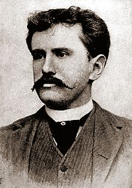

Chiếc lá cuối cùng(The Last Leaf) là một trong những truyện ngắn ngắn hay của nhà văn nổi tiếng người mỹ O. Henry
 Sue (phiên âm: Xiu) và Johnsy (phiên âm: Giôn-xi) là 2 nữ họa sỉ trẻ sống trong 1 khu nhà trọ. Cụ Berman (phiên âm: Bơ-men) là một họa sĩ già cũng sống gần đó; cả đời cụ khác khao vẽ được một kiệt tác nhưng chưa thực hiện được. Mùa đông năm ấy, Johnsy bị bệnh sưng phổi rất nặng. Bệnh tật và nghèo nàng khiến cô tuyệt vọng không muốn sống nữa và nghĩ rằng chiếc lá thường xuân cuối cùng rụng xuống là lúc mình lìa đời. Sue vô cùng lo lắng và hết lòng chạy chữa cho bạn nhưng vô ích. Biết được ý nghỉ điên rồi đó của Johnsy, cụ Berman âm thầm thức suốt đêm mưa gió để vẽ chiếc lá thường xuân. Chiếc lá cuối cùng đã không rụng trong đêm bảo lớn khiến Johnsy nghĩ lại, cô hi vọng và muốn được sống. Tuy nhiên, cụ Berman lại chết vì bệnh sưng phổi sau một đêm đội mưa đội gió để vẽ chiếc lá cuối cùng lên tường nhằm cứu Johnsy. Sau khi Sue được thông báo rằng Johnsy đã thoát khỏi nguy hiểm, cô lặng lẽ đến bên bạn báo cho bạn về cái chết của cụ Berman và bí mật chiếc lá cuối cùng.